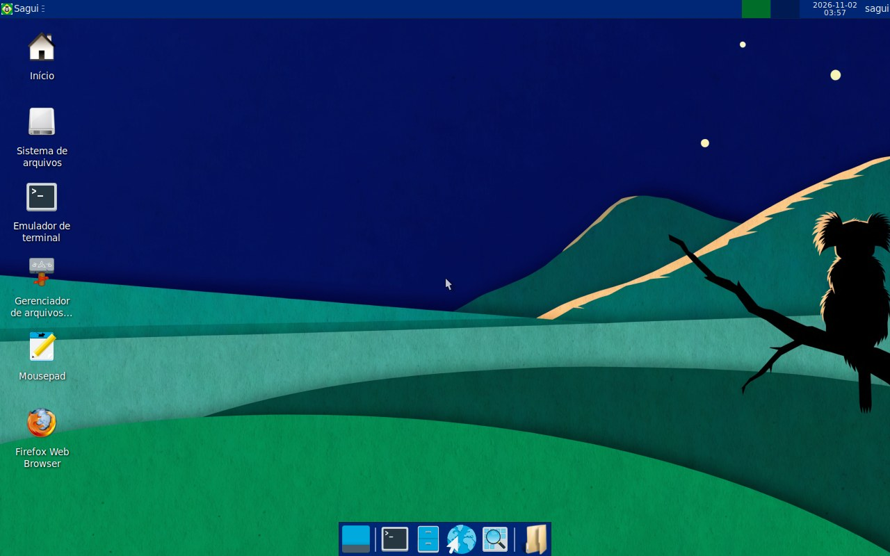

🤖 Criado 100% por IA · Claude Opus 5.5
Sagui Linux
Um sistema operacional Linux construído do zero, pacote por pacote, a partir do código-fonte — inteiramente por uma inteligência artificial, seguindo os livros Linux From Scratch e Beyond Linux From Scratch. Leve, com o desktop XFCE e as cores do Brasil.
Nenhuma linha de código, script ou comando foi escrita por uma pessoa: o Claude Opus 5.5 (Anthropic), no Claude Code, leu os livros, compilou cada pacote, corrigiu os erros e testou as imagens sozinho. A parte humana foi definir o objetivo, tomar as decisões de produto e testar num computador real. Entenda como →
Projeto educacional · roda direto do pendrive ou do CD (live) · BIOS e UEFI · x86_64

O que é
O Sagui Linux é um projeto educacional: a ideia é mostrar, na prática, como um sistema Linux é montado peça por peça — compilador, biblioteca C, kernel, sistema de inicialização, servidor gráfico, desktop e navegador — sem partir de nenhuma distribuição pronta. Todo o sistema foi compilado a partir do código-fonte, dentro de um ambiente isolado (chroot), seguindo os livros do projeto LFS.
Feito 100% por IA — o que isso quer dizer
O que a IA fez (Claude Opus 5.5)
- Leu os livros LFS 12.4 e BLFS 12.4 e extraiu os comandos;
- escreveu todos os scripts de build, de live boot e de testes;
- compilou ~250 pacotes do código-fonte, dentro de um chroot;
- leu os logs quando algo quebrou, descobriu a causa e corrigiu (26 vezes);
- escreveu o PRD da Fase 2, as histórias, o diário e o painel;
- gerou a arte no Higgsfield e testou as ISOs em máquinas virtuais, "olhando" capturas de tela;
- e escreveu este site.
O que o humano fez (Eli Rigobeli)
- Teve a ideia e escreveu o documento de requisitos (PRD) da Fase 1;
- respondeu às decisões de produto (nome, autologin, Firefox, versão do livro);
- liberou o acesso ao servidor e acompanhou pelo painel;
- gravou o pendrive e testou em um notebook real.
Nenhum código, comando ou correção foi digitado por uma pessoa.
Sagui Linux 2.0
XFCE 4.20, Firefox ESR, gerenciador de arquivos, terminal, editor de texto, visualizador de imagens, som e rede automática (DHCP).
Baixar →Edição de terminal 1.0
O sistema base do LFS, só com linha de comando: GCC, Bash, kernel 6.16 e ferramentas GNU. Ideal para estudar como o Linux funciona por baixo.
Baixar →Roda sem instalar
Grave no pendrive (ou use numa máquina virtual) e ligue o computador por ele. Nada é gravado no seu disco — tudo fica na memória RAM.
Como gravar →Acompanhe o processo de criação
Quer ver como tudo isso foi feito? Assista ao vídeo abaixo e acompanhe o canal @EliRigobeliAI no YouTube.
Vídeo em breve
Enquanto isso, veja o canal: youtube.com/@EliRigobeliAI
Em números
Feito com
Linux From Scratch 12.4 · Beyond Linux From Scratch 12.4 · Linux 6.16 · GCC 15 · glibc 2.42 · Xorg · Mesa · GTK 3 · XFCE 4.20 · Firefox ESR 140 · GRUB 2.12 — e milhares de pessoas que mantêm esses projetos de código aberto. Veja todos os créditos e licenças.